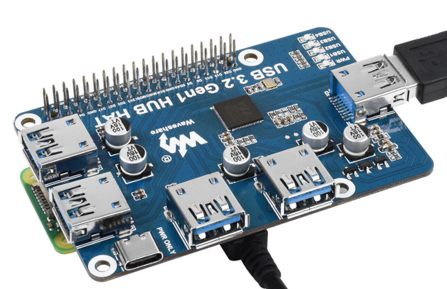
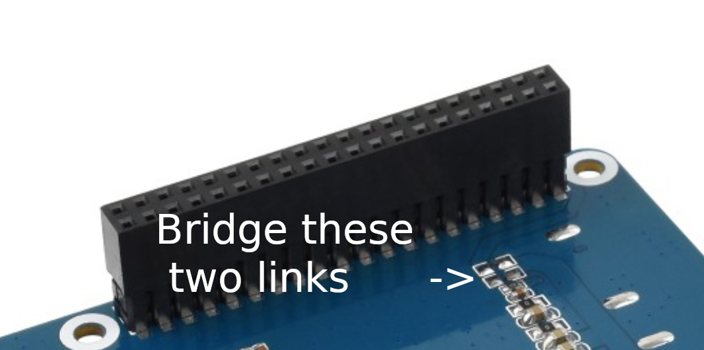

Powering a Raspberry Pi from an attached Waveshare USB HAT
 It's now possible to get bus-powered USB drives with capacities of
1TB or more. Unlike USB flash drives, regardless of capacity, these SSDs
typically require an amp or so of current. Supplying this current
is a stretch for the
USB ports on a Pi 4, and impossible on earlier Pi models.
Even on the Pi 4, the total current that can be supplied to all four
USB ports is 1.2A. It doesn't matter how much current the power supply
can deliver -- the Pi won't supply more than its design current to
peripherals. So, even if you can get away with powering an SSD from
the Pi 4, you won't be able to power much more.
It's now possible to get bus-powered USB drives with capacities of
1TB or more. Unlike USB flash drives, regardless of capacity, these SSDs
typically require an amp or so of current. Supplying this current
is a stretch for the
USB ports on a Pi 4, and impossible on earlier Pi models.
Even on the Pi 4, the total current that can be supplied to all four
USB ports is 1.2A. It doesn't matter how much current the power supply
can deliver -- the Pi won't supply more than its design current to
peripherals. So, even if you can get away with powering an SSD from
the Pi 4, you won't be able to power much more.
The solution, in principle, is to use a powered USB hub. But that complicates the power supply wiring a lot, because you've got to provide separate power supplies to the Pi board and the hub. What we need is a hub that can power the Pi. But even if we find a hub with a sufficiently stout power supply, its USB ports may not be able to supply the 2-3A that a Pi might need.
It seems as if a USB hub HAT designed specifically for the Pi would be the answer. The photo below shows such a HAT, made by Waveshare and sold under a number of different brand names.

This hub has a USB C power delivery (PD) port capable of handling 6A or so. The hub will happily power a large SSD, and other peripherals, given a sufficiently robust USB C power connection.
But... what about the Pi? We could run a USB cable from one of the hub's USB ports to the Pi's power input but, again, we're limited by the fact that the hub will only supply about 1A from each USB port. That might be enough to run the Pi in some applications, but it's a gamble.
it seems odd to me that the Waveshare USB HAT won't power the Pi directly. After all, it's connected to the Pi GPIO pins, so it has access to the 5V rail. It turns out that the HAT can power the Pi -- it's just not advertised or documented.
I spoke to somebody at Waveshare technical support about this, and I was advised to bridge two pairs of pads on the bottom of the HAT PCB. These pads need to have 0-ohm resistors soldered between them or, if you're brave, a stout piece of wire. The relevant pads are shown in the photo below.

It's fairly clear what direction to bridge the pads, because there's a row of similarly-bridged pads next to them.
The effect of this change is to connect the hub's 5V supply directly to the Pi via the GPIO header.
Note:
The procedure in this article worked for me, with a specific model of USB HAT from Waveshare. It may not work with other models. And, even though it has the official blessing of Waveshare, I wouldn't like to speculate about what soldering on the back of the PCB does to the vendor's warranty terms.
Waveshare technical support was at pains to point out that this will only work if you have a USB C PD power supply that is capable of delivering the required current - which could be as much as 6A, depending on what peripherals you attach.
So there you have it -- a simple and relatively affordable way to attach one or more large SSDs to a Raspberry Pi, with no additional power supply wiring, and without limiting what additional USB peripherals it can power.